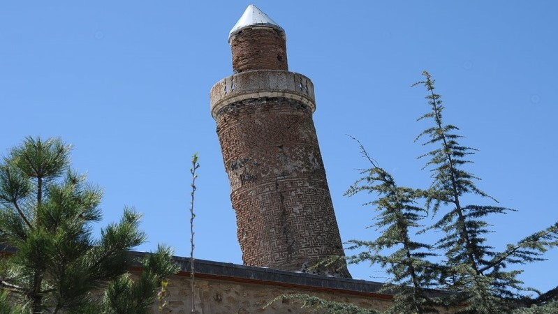

Elazığ
Harput Kalesi’nin eteklerine kurulmuş olan Elazığ, yaklaşık 4 bin yıllık geçmişe sahip kadim bir kenttir. Bulunduğu coğrafya sebebiyle birçok farklı kültür ve medeniyete ev sahipliği yapan bir şehirdir. Hemşehriler birbirlerine "Gakgoşlar" şekline hitap eder.
Harput, Ma‘mûretü'l-Azîz,Kürtçe: Xarpêt ve bilinen son eski adıyla El-Azîz,Atatürk Dönemi Türkçeleşme çalışmalarıyla beraber Elazığ ismini almıştır. Türkiye'nin Doğu Anadolu Bölgesi'nde Yukarı Fırat Havzası'nda bulunan, on bir ilçeden oluşan bir şehirdir. Konumu itibarıyla; ili doğudan Bingöl, kuzeyden Keban Baraj Gölü aracılığıyla Tunceli, batı ve güneybatıdan Karakaya Baraj Gölü vasıtasıyla Malatya, kuzey batıdan Erzincan illerinin arazileri çevrelemektedir.
Nüfus bakımından Doğu Anadolu Bölgesi'nin en büyük dördüncü ilidir.2023 yılı verilerine göre Elazığ ilinin nüfusu 591.497 kişidir.
Elazığ,Forbes Dergisine göre 2021 yılında Doğu ve Güney Doğu Anadolu Bölgesi'nin en yaşanılabilir ili, Türkiye'nin ise en yaşanabilir 19. ili seçilmiştir.
Coğrafi Yapısı
Fırat Nehri'nin kaynaklarından biri olan Elazığ birçok akarsuya sahiptir.Bunun yanında Keban barajı ve Hazar gölü bölgeye birçok turisti çekmektedir.Elazığ dağları ve ovaları bol olan bir şehirdir.Şehir,bulunduğu konum itibarıyla zengin yer altı kaynaklarına da sahiptir.Hatta Maden adında bir ilçesi de vardır.Bunun yanında deprem bölgesinde yer alan Elazığ tarih boyunca büyük depremlerden etkilenmiştir.
Kültürel Yapısı
Birçok ırka ve medeniyete ev sahipliği yapan Elazığ'ın etnik yapısının büyük bir çoğunluğu Kürtler,Türkler ve Zazalaardan oluşur.Kendi gözlemime göre şehirde Ermeni kültüründen de pek çok iz var.
Elazığ müziğe düşkün bir şehirdir.Müziklerinde ağır bir hava vardır ve klarnet sesi baskındır.Biz klarnete "Gırnata" deriz.Elazığ'ın yöresel oyunu Çayda Çıra'dır.Anadolu topraklarında uzun süredir varlığını sürdüren halk oyunlarından biridir.
Diğer Özellikler
Elazığ'da çevresindeki illere nazaran daha sulak bi şehirdir bunun yanında şehirde bolca alabalık tesisi görebilirsiniz.Birçok yemekte ceviz kullanılır.Dut,üzüm ve kayısı bolca üretilir.Hatta Malatya kayısısı,Elazığ'da Malatya'ya oranla daha fazla üretilir.Elazığ, pekmez ve şarap üretiminde başı çeken şehirlerden bir tanesidir.Harput Ulu Camisi'nin minaresi Pisa Kulesinden daha eğiktir.
Harput Kalesi
Alabalık Tesisleri
Harput Eğik Minare
Fırat Üniversitesi